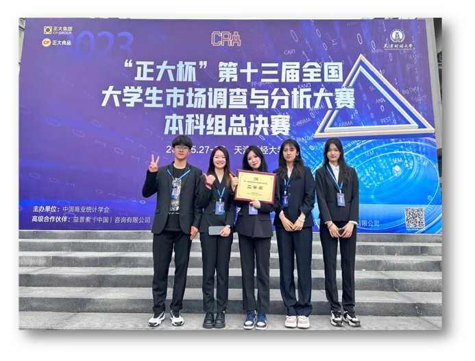
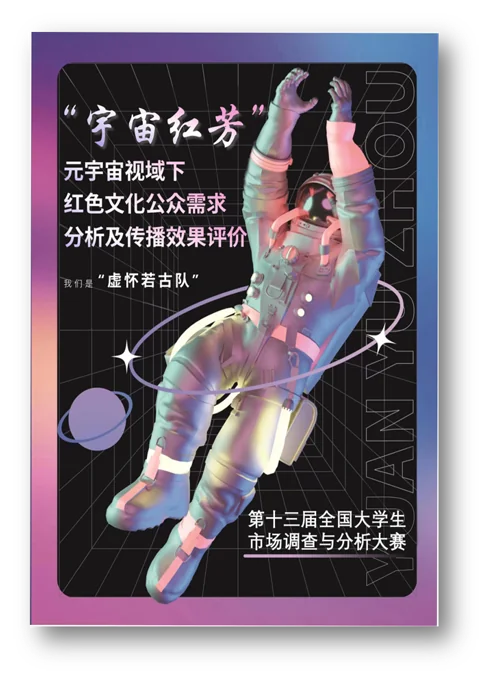
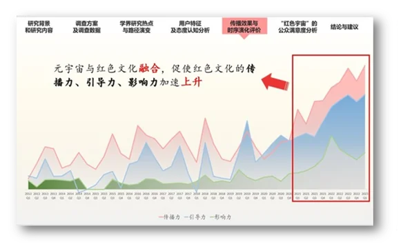
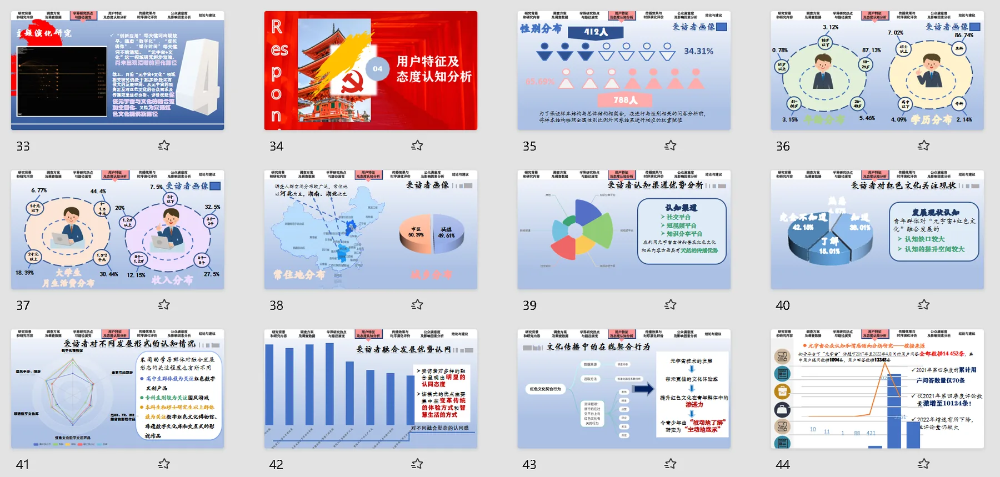
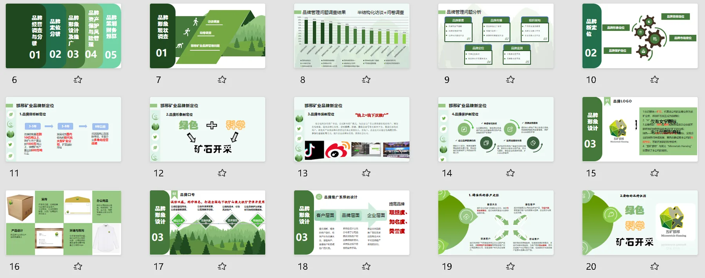
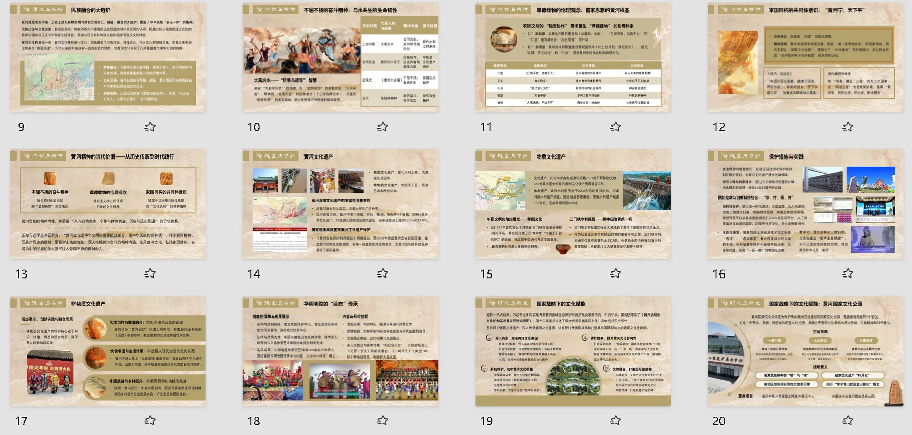

Projects — 项目
硕士期间的两个项目。

Research · Master's
SycoSense — AI 谄媚识别对话原型
从需求边界、多工具尝试到端到端串联的完整研究记录。
点击查看详情
Product Design · Master's
NeuroArt — 疗愈 AI 智能剧场
基于 EEG 脑电信号反馈的孤独症联觉疗愈项目，负责软件侧产品设计。
点击查看详情* 数据口径与简历一致，业务绝对值已脱敏。
Internship — 实习
接手 CTR 4% 的漫画推荐位，负责内容策略调整与日常数据监控，同时运营作品评论区。
人群定向由垂类包改为已读召回；盯 CTR、PV 等指标做日常调整；评论区运营；把过程整理为复盘 SOP。
CTR 4% → 15%；单部漫画周收入 4K → 1W+（+300%）；推荐位 PV +22%（次周留存 +12%）；用户互动 +35%。
负责在研产品的系统设计：活动系统、核心玩法与数值，以及配套的提示逻辑与调研支撑。
设计 24 小时限时连胜挑战活动（Lucky / Rare / Epic 三阶段）；撰写核心玩法与数值文档；定义道具提示逻辑；竞品拆解与海外用户反馈处理。
系统设计文档与配套文档成套产出；竞品拆解与调研报告；老产品迭代与海外用户反馈闭环。
Projects — 项目
Research · Master's
从需求边界、多工具尝试到端到端串联的完整研究记录。
点击查看详情Product Design · Master's
基于 EEG 脑电信号反馈的孤独症联觉疗愈项目，负责软件侧产品设计。
点击查看详情Campus — 校园项目与竞赛






"正大杯"第十三届全国大学生市场调查与分析大赛 · 本科组总决赛
Method — 方法论
本科会计学 → 硕士图情/HCI → 内容运营 → 系统设计。每进入一个新领域，都能在几周内拿出可用成果：数据复盘 SOP、系统设计文档、可交互原型。
快看的数据归因、哈米的竞品拆解、SycoSense 的文献调研——同一个习惯：判断建立在数据、竞品或文献上，不建立在感觉上。
复盘 SOP、GDD 文档、设计决策记录——每段经历结束时的产出，是下一个人能直接接手的东西，而不只是一份结果数字。
Toolkit — 技能
Let's talk.